Nacimiento y Educación (1963-1981):
Michael Jeffrey Jordan nació el 17 de febrero de 1963 en Brooklyn, Nueva York. Aunque nació en Nueva
York, pasó la mayor parte de su infancia en Wilmington, Carolina del Norte, donde creció y comenzó a
destacarse en el baloncesto.
Jordan asistió a la Laney High School en Wilmington, donde se destacó como un talentoso jugador de
baloncesto. Su habilidad en la cancha se hizo evidente desde temprana edad.
Luego, continuó su educación y carrera en el baloncesto al asistir a la Universidad de Carolina del
Norte en Chapel Hill. En la universidad, Jordan jugó para los Tar Heels y se convirtió en una figura
destacada en el baloncesto universitario. Uno de los momentos más notables de su carrera
universitaria fue su tiro ganador en el Campeonato de la NCAA en 1982,
que contribuyó a la victoria de Carolina del Norte en el campeonato.
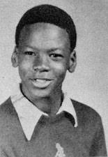
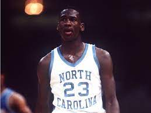
Inicios en la NBA (1984-1993)
Abarca desde 1984 hasta 1993, marcó el comienzo de su carrera en la NBA. Fue elegido por los Chicago
Bulls en el Draft de 1984,
ganó el Novato del Año en su primera temporada y se convirtió en uno de los máximos anotadores de la
liga. Durante esta fase, Jordan participó en emocionantes duelos con otras leyendas del baloncesto,
como Larry Bird y Magic Johnson,
y comenzó a cimentar su legado como uno de los mejores jugadores de baloncesto de todos los tiempos.
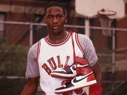
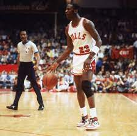
Retiro Temporal (1993-1995)
Durante su período de Retiro Temporal y Béisbol (1993-1995), Michael Jordan, en la cima de su
carrera con los Chicago Bulls,
sorprendió al mundo al retirarse del baloncesto y dedicarse al béisbol, jugando en las ligas
menores.Jordan decidió dar un giro radical a su vida deportiva al incursionar en el béisbol, un
deporte que había practicado en su juventud y que su difunto padre también amaba profundamente.
Firmó un contrato con los Birmingham Barons, un equipo de ligas menores afiliado a los Chicago White
Sox en el béisbol de las ligas menores. En los años que pasó en el béisbol, Jordan se sometió a una
intensa formación y jugó como jardinero. A pesar de su dedicación y esfuerzo, su desempeño en el
béisbol nunca igualó su excelencia en el baloncesto.
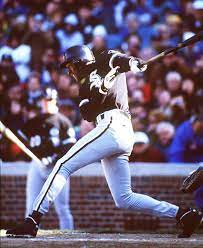
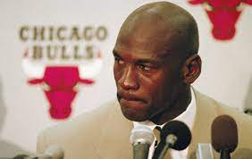
Segunda Etapa con los Bulls (1995-1998)
Fue un retorno triunfal que consolidó su legado como uno de los más grandes jugadores de baloncesto
de todos los tiempos. Después de su retiro temporal, Jordan regresó en 1995 y lideró a los Bulls a
tres campeonatos consecutivos en 1996, 1997 y 1998. Su capacidad para recuperar su forma y liderazgo
inmediatamente, junto con su impacto en la cultura popular y la moda a través de la marca Air
Jordan, hizo que esta etapa fuera emblemática tanto en la NBA como en la historia del deporte en
general.
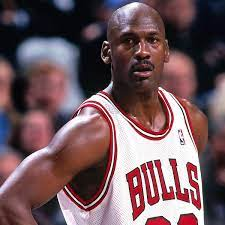
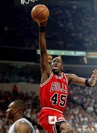
Retiro y Regreso (1999-2003)
El Retiro y Regreso de Michael Jordan en la NBA entre 1999 y 2003 marcó un capítulo intrigante en su
carrera. En 1999, Jordan anunció su segundo retiro del baloncesto, poniendo fin a su etapa con los
Chicago Bulls. Esta decisión fue motivada por razones personales y una sensación de que había
alcanzado todos sus objetivos en el baloncesto. Sin embargo, en 2001, dejó a todos atónitos al
anunciar su regreso a la NBA, esta vez con los Washington Wizards. A los 38 años, volvió a demostrar
su destreza en la cancha y su deseo inquebrantable de competir. Aunque no logró llevar a los Wizards
a un campeonato, su regreso destacó su amor apasionado por el juego. Finalmente, en 2003, se retiró
definitivamente a los 40 años, marcando el cierre de una carrera legendaria. Su segundo retiro y
regreso añadieron un nuevo capítulo a su ya impresionante legado en el baloncesto y la cultura
deportiva en general.
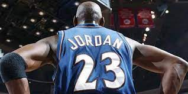
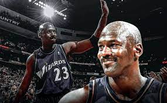
Carrera Post-Baloncesto
Tras su retiro, Jordan se convirtió en un exitoso empresario. Fundó la compañía Jordan Brand bajo el
paraguas de Nike, que se convirtió en una de las marcas de zapatillas deportivas más populares y
lucrativas en el mundo. Las zapatillas Air Jordan se han convertido en un icono de la cultura del
calzado deportivo y continúan siendo muy populares.
Además de sus esfuerzos en la industria del calzado, Jordan también se convirtió en copropietario y
presidente de operaciones de los Charlotte Hornets, un equipo de la NBA, en 2010. Su papel en la
administración de los Hornets lo llevó a seguir siendo una figura influyente en el mundo del
baloncesto y le permitió participar en la toma de decisiones en la liga.
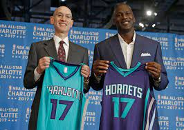
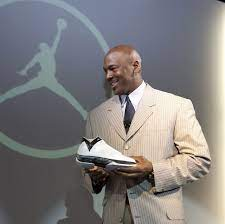